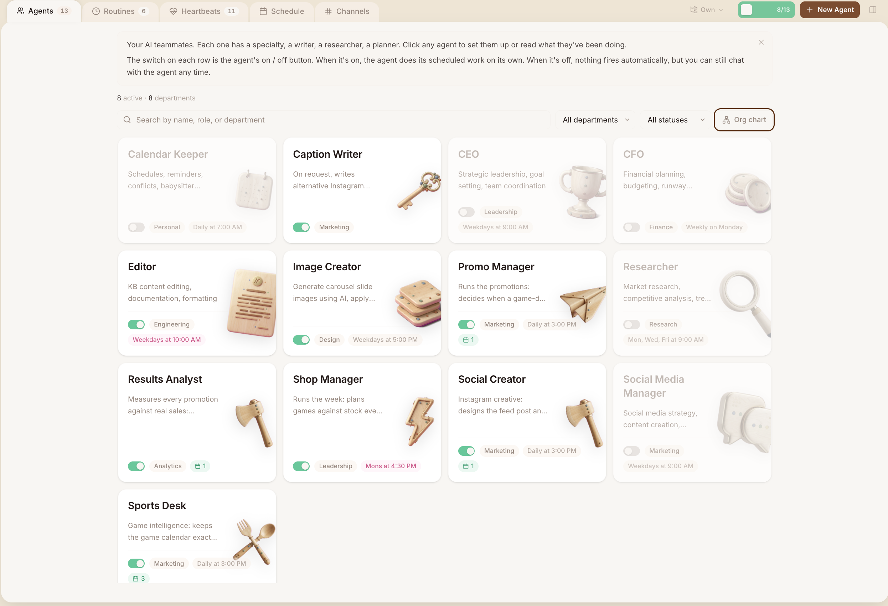
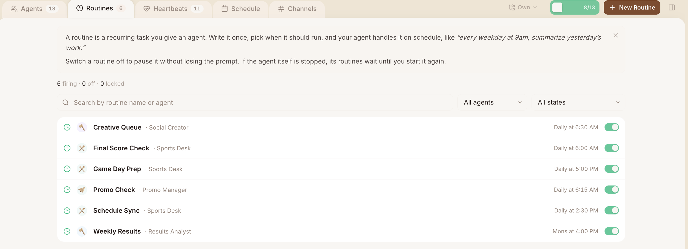
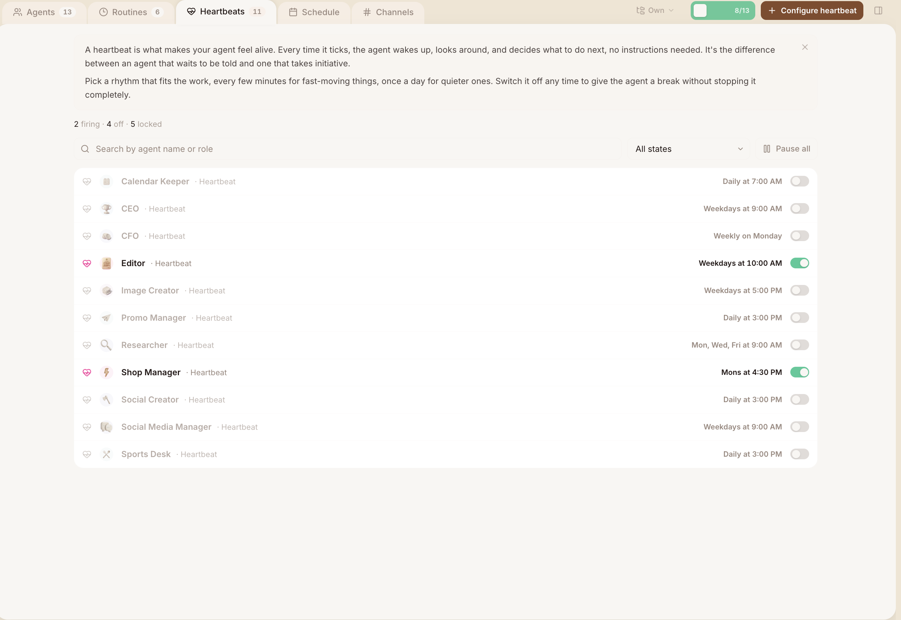
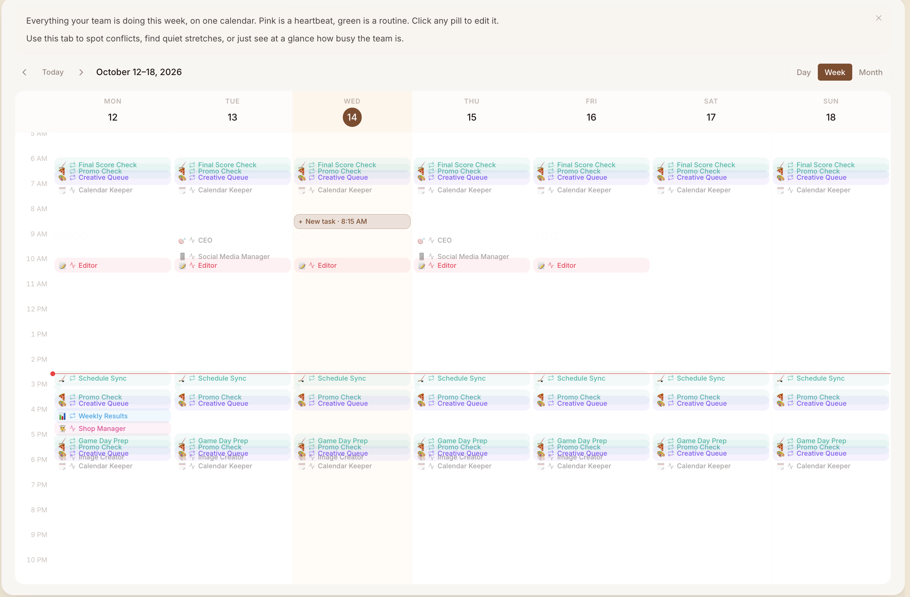
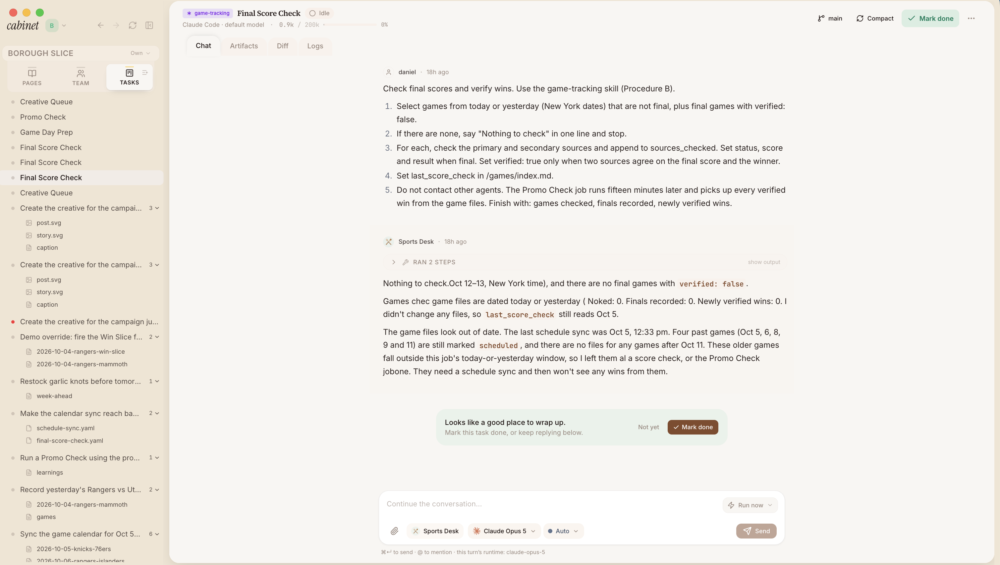
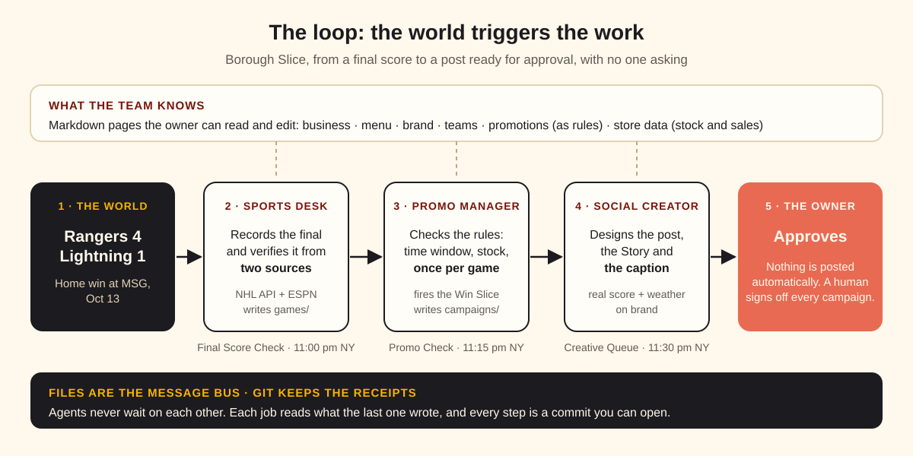

Borough Slice
To put this thesis to the test, I built a small, reusable Cabinet template called Borough Slice.
Borough Slice gives local businesses a marketing team that doesn't just generate content: it continuously understands what's happening around them and turns those signals into real marketing opportunities.
The first implementation is a small New York pizza shop, built around a simple idea:
Local marketing should breathe with its environment.
I'm a Knicks fan. After years of waiting for a championship, I was completely out of my mind when it finally happened. Whenever I go to Madison Square Garden with friends, we have a tradition of grabbing some juicy NY slices after a win, sometimes even after a loss, or simply before the game when we're hungry.
That made me realize something: a marketing campaign is worth very little if it doesn't match its environment.
The data feeding it shouldn't be a static template. It should be a living resource that understands what's happening around the business and the factors that influence its customers.
A Knicks win near Madison Square Garden is not just a sports result. For a local pizza shop, it can become a marketing opportunity. A major concert, a playoff game, a neighborhood event, bad weather, a holiday or a sudden change in local activity can all create moments when the right message at the right time really matters.
The idea behind Borough Slice is simple: don't just give a business an AI that creates marketing. Give it an AI team that understands when there is something worth marketing.
It uses only Cabinet's own building blocks: markdown knowledge files, agents, skills stored inside the cabinet, scheduled jobs and an embedded dashboard. I didn't change Cabinet's code. The template is general: another business replaces six pages and keeps everything else.

Inside the cabinet

The team
Six agents, each with a single job, a department and its own schedule: Sports Desk, Promo Manager, Social Creator, Shop Manager, Results Analyst and Caption Writer, plus Cabinet's built-in Editor. I also tried six agents from Cabinet's library (Calendar Keeper, CEO, CFO, Researcher, Social Media Manager and Image Creator) and removed them, because they had nothing real to do here.

Routines: the work that runs on its own
Six routines, all firing, each owned by exactly one agent. The Sports Desk keeps the calendar and scores (Schedule Sync, Final Score Check, Game Day Prep), the Promo Manager decides what fires (Promo Check), the Social Creator designs the creative (Creative Queue) and the Results Analyst measures it every Monday (Weekly Results). Nobody has to ask; the world triggers the work.

Heartbeats: initiative, used sparingly
A heartbeat wakes an agent with no instructions and lets it decide what to do. I kept only two on: the Shop Manager's Monday planning session and the Editor. The specialists run on routines instead, because a precise task on a schedule is more predictable and cheaper than an open-ended wake-up. This is part of how the schedule went from about 28 runs a day to 10.

The week on one calendar
Everything the team does in a week, on one screen (green is a routine, pink is a heartbeat). You can read the chain directly: Final Score Check, then Promo Check, then Creative Queue, fifteen minutes apart, after each night's games; Game Day Prep in the morning feeds that day's promotion. Times show on this computer's clock (Tel Aviv), shifted from the New York times the template is designed around, because Cabinet jobs have no timezone setting.

Every run leaves a receipt
Every run is a task you can open, with its Chat, Artifacts, Diff and Logs, and the left sidebar lists each task with the files it touched. In this run the Sports Desk found nothing to check and explained why: the game files hadn't been synced since Oct 5, older games were still marked scheduled, and nothing existed after Oct 11. It reported the gap instead of quietly editing files outside its job. That is exactly the behavior you want from an agent you aren't watching.
How I approached it
- I read before building. I went through the Cabinet source and the templates registry to learn how templates, agents, skills, jobs and embedded apps actually work, and I studied Career Ops as the reference template.
- I used every existing resource I could find. For example, I opened Cabinet's website (https://runcabinet.com/) in the browser's inspection mode and read its source files for formatting direction, and I read Hila's posts on X.
- I built a first version, then narrowed it. The first version was Los Tacos, a local marketing team. After reading Hila's posts on "the harness beyond code" and "a company brain that runs while you sleep", I stepped back and narrowed the idea to one strong, proactive loop: the world triggers the work, and git keeps the receipts.
- I wrote a design spec and a step-by-step build plan.
- I built it with a validator script that checks every file against the spec, and tested the dashboard in a real browser.
- I ran it live in the Cabinet desktop app against real NHL and NBA data, and changed the design based on what actually happened:
- Two tasks ran in parallel, and the planner saw an empty calendar.
- Delegation between agents turned out to need human approval, so I switched to "files are the message bus": each agent's job reads what the previous one wrote.
- An agent edited a file outside its folder.
- The schedule was too busy, so I cut it from about 28 runs a day to 10.
- I tried 8 agents from Cabinet's library, adapted 2 and benched 6.
- I recorded the decisions and the platform findings in a write-up inside the cabinet.
